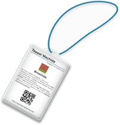

もしあなたがものを作ってる人ならば、経歴や就職している企業名や肩書きよりも、具体的に「何を作ってる？」を知りたい。きっと多くの人がそう思っているはず。そういう人に向けて情報を発信できるサービスです。
勉強会や交流会など、多くの人が集まるイベントでは、そこに集まった全員と話すことはなかなか困難です。イベント参加者が「MAKES THIS」を使っていれば、前もって話したい人をチェックすることができます。
これから関わる人があらかじめ「MAKES THIS」を見ておくことによって、自己紹介の時間も削減でき、その分もっと進んだ地点から会話をスタートすることが出来ます。
また、作っているものを知っておくことによって、質問や話題を用意する時間も生まれます。
勉強会や交流会など、多くの人が集まるイベントでは、そこに集まった全員と話すことはなかなか困難です。イベント参加者が「MAKES THIS」を使っていれば、前もって話したい人をチェックすることができます。
これから関わる人があらかじめ「MAKES THIS」を見ておくことによって、自己紹介の時間も削減でき、その分もっと進んだ地点から会話をスタートすることが出来ます。
また、作っているものを知っておくことによって、質問や話題を用意する時間も生まれます。